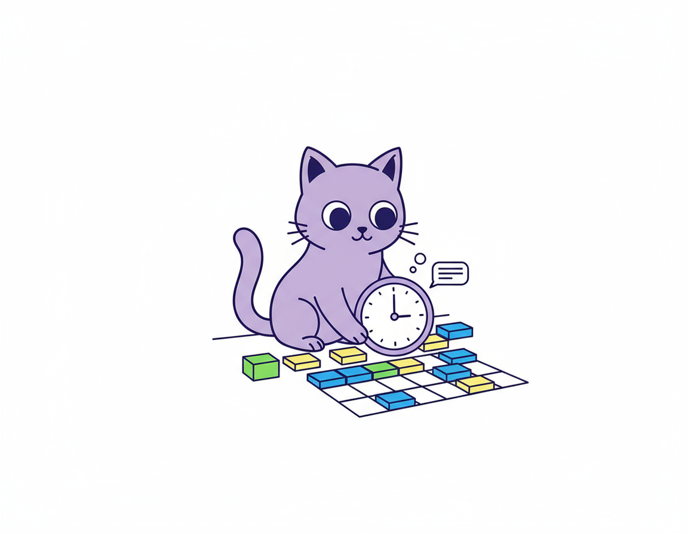
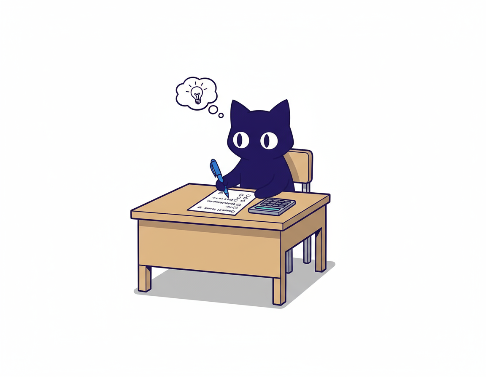
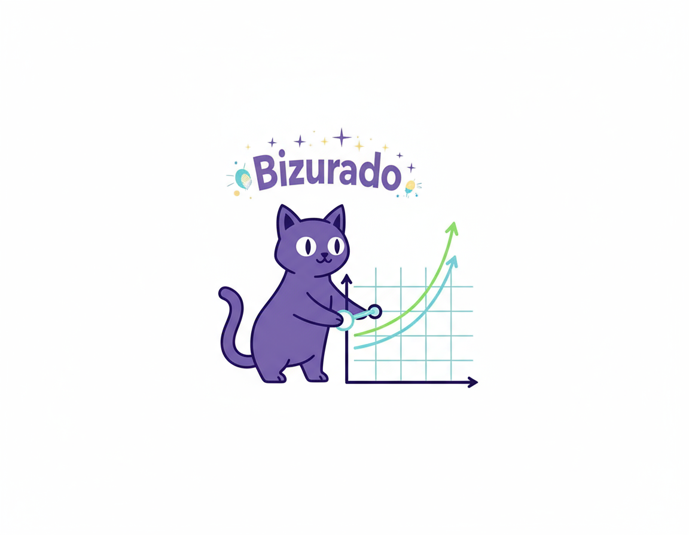

Passo a passo para a aprovação!
1. Defina o Objetivo
Escolha o concurso principal que deseja prestar, estude o edital mais recente (ou editais anteriores) e liste todas as disciplinas cobradas.

2. Organize o Tempo
Defina quantas horas por dia você pode estudar de forma realista e crie um cronograma semanal fixo.
- Exemplo: 3h/dia durante a semana + 6h no sábado.
- Crie rotina em horários fixos (manhã, tarde ou noite).
3. Estruture as Disciplinas
Separe as disciplinas em dois grupos:
- Básicas: Português, Raciocínio Lógico/Matemática, Informática, Direito Constitucional e Administrativo.
- Específicas: Variam conforme o concurso (ex.: Contabilidade, Direito Penal, Previdenciário, Tributário).
Regra de ouro inicial: 70% do tempo para básicas e 30% para específicas (depois pode inverter).
4. Método de Estudo
- Teoria (40%): Ler PDFs, apostilas, assistir aulas, fazer anotações.
- Questões (50%): Resolver questões de provas anteriores na PlataformaBizurada , de preferência de banca anteriores.
- Revisão (10%): Revisar no mesmo dia, depois de 7 dias e após 30 dias.
5. Técnicas para Fixar
- Crie mapas mentais ou resumos curtos dos pontos mais difíceis.
- Use flashcards (ex.: Anki) para decorar leis e artigos.
- Leia a lei seca regularmente, principalmente para concursos jurídicos.

6. Simulados e Controle
- Realize simulados a cada 15 dias (2 a 4 horas).
- Marque os acertos e erros em uma planilha.
- Reforce as disciplinas com maior índice de erros.
7. Hábitos de Concurseiro
- Estude em horário fixo para criar disciplina.
- Use a técnica Pomodoro (25min estudo + 5min pausa).
- Evite distrações (celular, redes sociais).
- Durma 7–8h por noite e pratique atividade física leve.

8. Ajuste Progressivo
Se o edital sair, reorganize o cronograma de acordo com o peso das disciplinas. No último mês, concentre-se em revisões, questões e simulados.
Exemplo de Cronograma (3h/dia)
- Segunda: Português (1h30) + Raciocínio Lógico (1h30)
- Terça: Constitucional (1h30) + Administrativo (1h30)
- Quarta: Informática (1h) + Específica (2h)
- Quinta: Português (1h) + Específica (2h)
- Sexta: Revisão geral (3h – teoria + questões)
- Sábado: Simulado (manhã) + correção (tarde)
- Domingo: Descanso ou revisão leve (lei seca/flashcards) Clique aqui e monte seu cronograma bizurado!